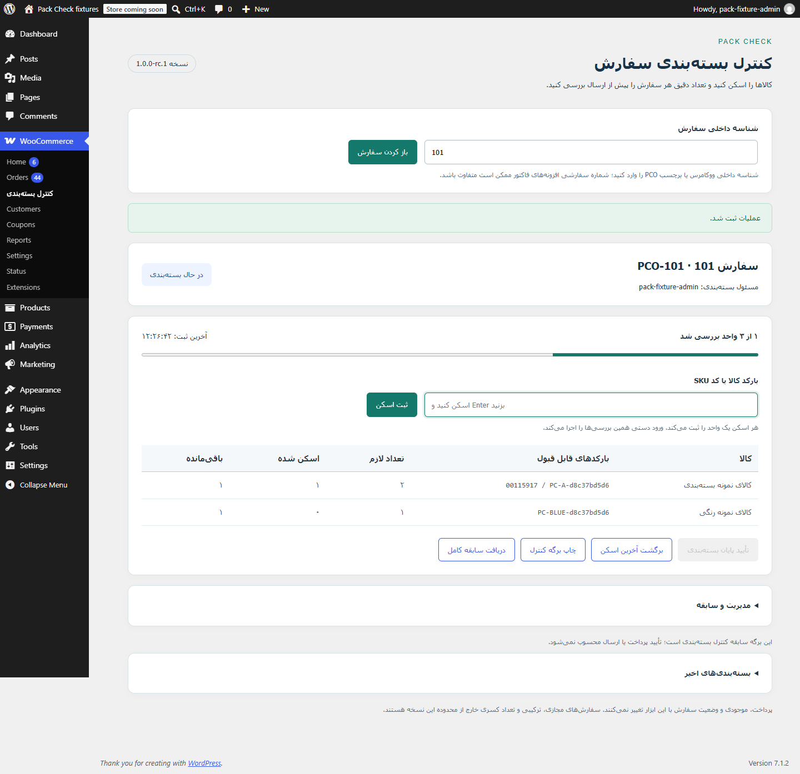
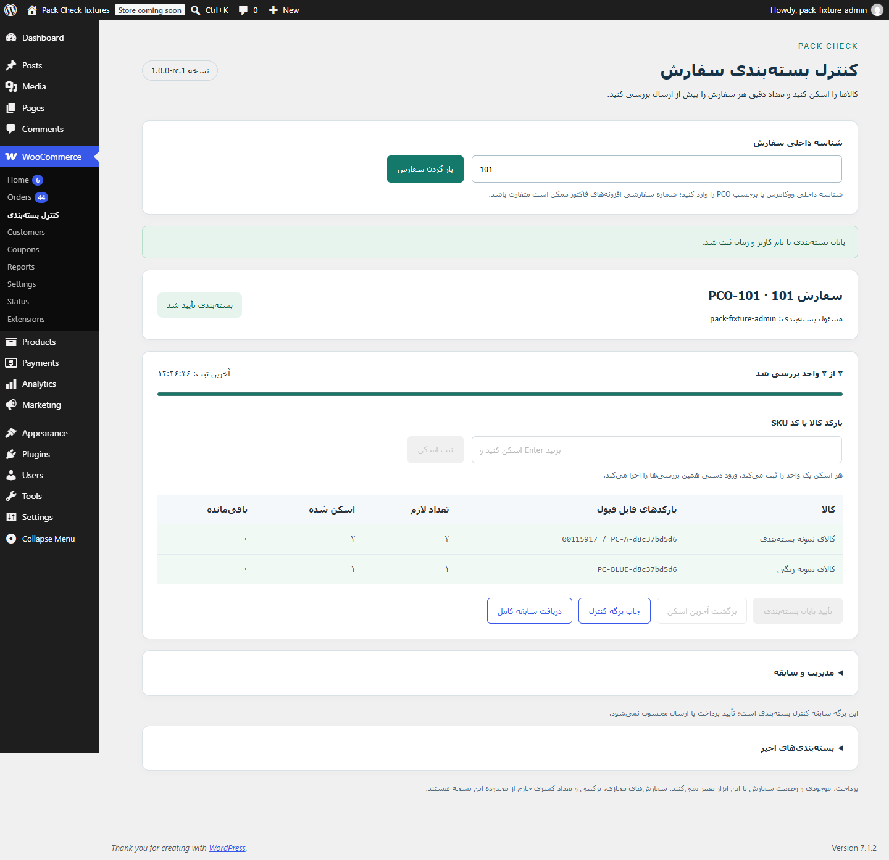
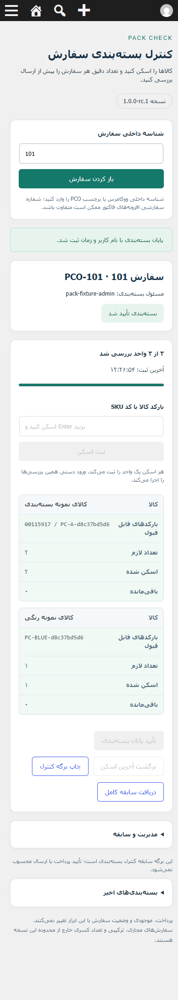

هر کالا، هر تعداد؛ پیش از ارسال
کالاهای داخل بسته را با سفارش ووکامرس تطبیق دهید. هر واحد را اسکن کنید و تکمیل بستهبندی را با سابقه بررسی ثبت کنید.
نسخه کاندید انتشار 1.0.0-rc.1 — تصاویر و ویدیو از سفارش آزمایشی ساخته شدهاند. این صفحه معرفی محصول است؛ امکان ورود و آزمایش زنده وردپرس ندارد. بررسی روی هاست واقعی و اسکنر و چاپگر فیزیکی پیش از انتشار عمومی باقی مانده است.
از اسکن هر واحد تا ثبت پایان بستهبندی
ویدیوی ۳۶ ثانیهای با توضیحات فارسی روی تصویر؛ ثبت اسکن صحیح، جلوگیری از کالای اشتباه و تکمیل بسته آزمایشی.
محیط واقعی افزونه



آنچه Pack Check انجام میدهد
- کنترل کالا و تعداد با SKU، GTIN بومی ووکامرس یا بارکد اختصاصی محصول؛ پشتیبانی از ارقام فارسی و عربی هنگام ورود.
- تشخیص کالای اشتباه و اسکن اضافه؛ پشتیبانی از کالای ساده و تنوعهای مشخص.
- ذخیره پیشرفت، ادامه پس از بارگذاری دوباره، سابقه عملیات و جلوگیری از ثبت دوباره درخواست بازیابیشده.
- نقش بستهبند، مالکیت جلسه و بازنشانی یا واگذاری توسط مدیر با ثبت دلیل.
- چاپ نتیجه بررسی و خروجی JSON از سابقه؛ بدون تغییر موجودی، مبلغ یا وضعیت سفارش.
محدوده نسخه فعلی
سفارش بومی ووکامرس با وضعیت در حال انجام، اقلام فیزیکی و تعداد صحیح: حداکثر ۱۰۰ ردیف و ۱۰۰۰ واحد. اسکنر باید مانند صفحهکلید متن و Enter وارد کند. دوربین موبایل، سازگاری با شماره فاکتور سفارشی، ساخت برچسب ارسال و اتصال شرکت حمل در این نسخه وجود ندارد.
بررسی سازگاری ثبتشده
آزمونهای محلی روی PHP 8.1.31 / WordPress 6.8 / WooCommerce 9.5 و PHP 8.3.35 / WordPress 7.1.2 / WooCommerce 11.1.2، با ذخیرهسازی قدیمی سفارش و HPOS انجام شدهاند. این نتایج تضمین سازگاری با همه افزونهها و هاستها نیست.
پرسشهای کوتاه
آیا وضعیت سفارش تغییر میکند؟
خیر. نتیجه بستهبندی در سابقه خود افزونه ذخیره میشود؛ موجودی، پرداخت، یادداشت سفارش و ایمیل مشتری تغییر نمیکنند.
بارکد تنوعها چگونه انتخاب میشود؟
هر تنوع باید شناسه قابل تشخیص مستقل داشته باشد. بارکد مشترک والد برای چند تنوع قابل استفاده نیست.
آیا اسکن با دوربین پشتیبانی میشود؟
این نسخه برای ورود متنی بارکد یا اسکنر صفحهکلیدی ساخته شده است.